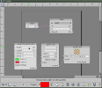
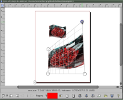
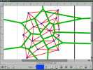
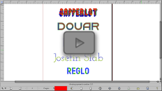
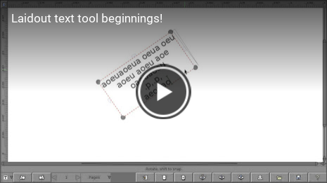
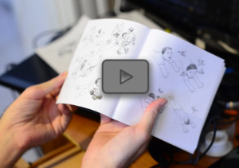
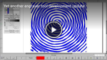
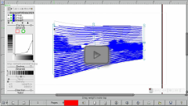

News
28 February 2018
Node Things
Here's a demo of how to use the new node tool to do some light animation, with the help of gegl (gegl.org) based nodes. To play around with this, you need to compile the development source code, and run with laidout -E. Needs a lot of testing!
If you are in Pasadena on March 9 at 10 am, you can see me talk about it at Scale 16x!
3 December 2017
Work in progress...
Here's a sneak peak of features I've been working on, to distract myself from the toil of debugging my text tools. For instance, in order to use the engraving tool to its fullest potential, cross linking image tracing sources needs to be easy. This is a bit difficult to do with the current control box, so I started to work on a node based system of controls. I'm implementing this in part with the gegl library, which is lower level, but still node based and, as it turns out, rather easy to map to an interface.

{kind=link}
These nodes will some day also be used for per object vector or raster based filters as well. If per object filters exist, then it would be nice to transform by a perspective grid, for instance, among so many other things:

{kind=link}
Also sometimes useful for built textures are voronoi fields, which usually are difficult to manually construct.

{kind=link}
Please note these are only at proof of concept stage and not quite usable yet! I hope to show fully functioning versions at Scale 16x in Pasadena, March 9, and hopefully also this year's Libre Graphics Meeting in Seville, Spain in late April.
15 April 2017
Spring...
Here's a short video tour of a freshly debugged clone tiler in Laidout. Unfortunately, I am unable to attend the Libre Graphics Meeting this year, so instead, in sympathy I'm doing a bit of a debugging sprint. Next on the list is debugging the new text tools, and implementing proper file exporters for them.
10 May 2016
Libre Graphics Meeting Recap
This year's LGM in London has come and gone. It's always interesting to see what other projects are working on, and get a feel for how things can interoperate.
Thanks to everyone who came to the Laidout Engraving workshop! A few glitches, but at least a few people were able to get Laidout running enough to play around with. It was a lesson to me to not take things for granted, and thoroughly test the stuff you will present, not just expect things that have worked for years to still be working!
I also presented the new text tools I've been working on, particularly the brand new text on path tool. Just in the nick of time, I was able to make variable width stroking adjust text glyph heights. Now I need to smooth out all the shortcuts I took making the tool, and make it work properly with the rest of Laidout. Also in the works was color font usage. I didn't quite get my opentype svg color font functional before LGM, and I'm still working on it. Special thanks to Hin-Tak Leung, who figured out what was going wrong with my font (obscure unicode mapping difficulties), and also offered many pointers on how to make Laidout's build process a little more streamlined.
18 December 2015
Laidout 0.096 Released! Wa-hoo!
The biggest change this time is finally switching to cairo for rendering, instead of cobbling together hideous Xlib based methods. This opens up a variety of rendering finesse, such as the ability for transparent paths, and perhaps more interestingly, a text tool. I'm sure there are many cairo rendering related bugs hiding out around the edges of Laidout, so please let me know if and when you find them!
- Text caption tool
After a mere 10 years of Laidout's existence, there is now a native text tool! It is a bit of a prototype right now. Expect major improvements as I learn to navigate the huge mass of issues surrounding encoding, rendering, and exporting text. Currently, each text object must have the same font, color, and size. Exporting to SVG works best. Export to PDF and Scribus is mediocre, as those suffer from text sizing issues I haven't figured out yet. - More export arrangement options
Now there are options to export only even or odd spread numbers, as well as rotate each by 90 degree increments or rotate every other spread by 180 degrees. Also, you can export in reverse order. - Engraver tool
This tool has numerous refinements, such as being able to use the different modes on many engraver objects at once. The group stacking has more control over visibility, and groups can now more easily share style resources, like dash patterns and tracing. Also new is a kind of random field offset applied to the auto line types like radial, circular, linear, and the new spiral type. One bad thing about the switch to cairo is that the engraver tool is slightly less responsive. The old fast xlib screen render does not translate to a fast cairo render, and I need to totally reprogram the previewer. That'll have to wait for the next release. - Spread Editor enhancements
The spread editor is now a little more flexible with page number markers. You can now easily tag pages with markers of different shapes and colors for simple visual cues to indicate how done you are as you work on them. - New file dialog
The File Dialog has been totally reprogrammed, and hopefully is easier to use now, with clearer access to recent files and bookmarks, and allowing easy change to the preview window size.
    
What's Next?
When I started Laidout 10 years ago, I never really intended it to be a full featured editing environment, but as time goes on, I wish for more such things, like having adequate object management features. Having cairo in place now is definitely a good incentive to work more on these things.
Otherwise, I'll keep plugging away to more fully integrate net impositions to allow more unusual stacking arrangements. The clone tiling interface also needs some attention. Finally, I want to keep working toward some kind of tool sharing regime, to allow easy sharing of tool interfaces among different software. This is a non-trivial task! No matter how well any one program does something, it will never do everything someone wants. Sharing interfaces would at least let users use their favorite interfaces, despite working on different types of data.
Read old news
What the hell?
Laidout is desktop publishing software built from the ground up with imposition in mind. Currently one may arrange pages into various cut and folded impositions, such as a booklet, or even a dodecahedron. You can fill pages with images, gradients (linear, radial, and mesh), mesh transformed images, engraving-like fill objects, and some basic text. Export with varying degrees of success to Svg, Scribus, Pdf, and more.
See the Laidout Features page for more detail about what it can do now, the Roadmap for what it's supposed to do eventually, and this (incomplete) comparison to a few other desktop publishing and vector graphics programs.
It is in the "Mostly does what I want on my machine" stage of development. I try to have a new "stable" release once in awhile, at least when various other projects don't eat all my time, which seems to happen a lot lately. "Stable" in this context means that it is only slightly less buggy then the raw development branch.
I have been using Laidout to lay out my comics into books since 2006. So, one out of 7 billion people agree that Laidout might actually be useful! For example, one can make small booklets by chopping up tabloid sized paper (11x17 inches). With a fold, two cuts, and stapling, one can make three cute little 5.5 x 5.6 inch books.
Many more features are planned, like such non-essentials (to me anyway) as flowed text boxes. Who needs text when a picture is worth a thousand words?
Laidout, together with the Laxkit backend, aims to make a well documented, very modular, expandable, and configurable desktop publishing program, with an emphasis on developing tools not commonly found in other programs, as long as they are useful. A side project is to foster the ability to share these tools with other software.
System Requirements
Laidout only works on variations of Linux for now. It should work on Macs after a small amount of hacking, but I don't have access to a Mac to make it so.
Download
"Stable"
The current release is Version 0.096.
Really these are more like development snapshots than anything resembling stability. You can help turn Laidout into something like stable by posting feedback on your experiences with it to the Laidout mailing list, or dropping me a line.
In any case, you can get Laidout in source code form, or as a deb package for debian based amd 64bit systems. With 0.096, github is now the place to go for code and release binaries. The main 0.096 download area is here.
laidout-0.096.tar.bz2 (the source code)
laidout_0.096_amd64.deb (binary, should work on Debian Unstable, and recent Ubuntu)
laidout-ubuntu14.04_0.096_amd64.deb (binary, should work Ubuntu 14.04 LTS)
Compiling from "stable" source
If you download the source code form, you must compile and install from the command line. First, as root or with "sudo", install dependencies:
apt-get install g++ pkg-config libpng12-dev libreadline-dev libx11-dev libxext-dev libxi-dev libxft-dev libcups2-dev libimlib2-dev libfontconfig-dev libfreetype6-dev libssl-dev xutils-dev libcairo2-dev libharfbuzz-dev libsqlite3-dev libgraphicsmagick++1-dev zlib1g-dev mesa-common-dev libglu1-mesa-dev libftgl-dev
And then:
tar xvfj laidout-0.096.tar.bz2
cd laidout-0.096
./configure --prefix=/usr/local
make
make install
cd laidout-0.096
./configure --prefix=/usr/local
make
make install
Some of the dependencies above (from mesa-common-dev on) are for the unstable polyhedron unwrapper. You don't need them if you disable the opengl based unwrapper by passing --nogl to the configure line above. The unwrapper exists also in a standalone version in laidout-0.096/src/polyptych.
Instead of compiling as above, you can build a deb package from the source tar like the following. You'll need to have dpkg-dev and fakeroot packages installed. This will create an installable deb package. If you try this and it doesn't work, please let me know. It is supposed to work!!
tar xvfj laidout-0.096.tar.bz2
cd laidout-0.096
dpkg-buildpackage -rfakeroot
cd laidout-0.096
dpkg-buildpackage -rfakeroot
Development
Please note that as of October 10, 2015, the development source code is now hosted at github. You can browse the git repository here, or you can grab a copy from the repository with this command:
git clone https://github.com/Laidout/laidout.git
To actually compile from this git source, see the further instructions in the Compiling From Development Git section of the README. If you think you might like to help develop Laidout, please see this page.
Contact
You can try Laidout's issue tracker at github, or there is a general purpose mailing list here.
Currently, the only developer is Tom Lechner, and he has been hacking away at Laidout to help make his artwork.